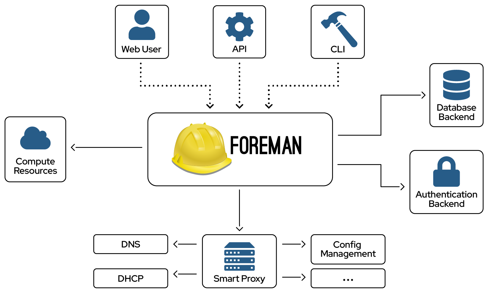

Showoff Menu
Close
Press ? for help.
All features are anonymous.
Press ? for help.
All features are anonymous.
Foreman | Lifecyclemanagement for Server
created by NETWAYS GmbH
Original Author: Dirk Götz
Official Foreman Training
by NETWAYS GmbH (www.netways.de)
Provided by:

www.netways.de - github.com/NETWAYS - @netways
To Support:
www.theforeman.org - github.com/theforeman - @ForemanProject
Official Foreman Training
by NETWAYS GmbH (www.netways.de)
For events and trainings hosted by NETWAYS see our
Official Foreman Training
by NETWAYS GmbH (www.netways.de)
Official Foreman Training
by NETWAYS GmbH (www.netways.de)
This training course will introduce the architectual concepts of Foreman, will cover installation, usage and administration. The configuration management solution used will be Puppet and/or Ansible.
Official Foreman Training
by NETWAYS GmbH (www.netways.de)
This chapter will give you a basic understanding of the architecture of Foreman, its Smart proxies and Compute Resources.
In this chapter you will get an idea on the different setups you can create, what is required for running foreman, how the installer works and will create an All-in-one setup including DNS and DHCP in preparation for unattended installations.
This chapter provides basic knowledge on automated installation mechnism for Linux. You will learn how to configure them in the Foreman Web GUI. Afterwards several installation scenarios will be covered from bare metal installation using PXE over creating virtual machines using Compute Resources and metal as a service with Foreman's Discovery Plugin to creating a setup using installation media instead of PXE.
Some basic explainations will give you enough knowledge to understand how Puppet works and to use it to configure newly provisioned systems to your needs. Some existing Puppet modules will be imported, parameterized and assigned to the systems directly or via a host group. Configuration runs will be reported back to Foreman so the administrator can see success and failure. Furthermore similar exercises are provided for Ansible.
To give more users access to the Foreman Web GUI LDAP authentication will be added. Privileges will be added to the new users. Also the auditing capabilities of Foreman will be covered so you can see what your new users do.
Some advanced topics like debugging, clean up, backup and restore will be covered in this chapter. Also the usage of the API and CLI will be shown. Furthermore additional plugins helpful in some environments will be introduced. And last but not least the trainer will show you Katello. This project adds content and subscription management to Foreman and is the upstream project for Red Hat Satellite 6.
Work together! Be part of the training team and find solutions together.
Additional documentation in your browser at
Official Foreman Training
by NETWAYS GmbH (www.netways.de)

Official Foreman Training
by NETWAYS GmbH (www.netways.de)
Official Foreman Training
by NETWAYS GmbH (www.netways.de)
Official Foreman Training
by NETWAYS GmbH (www.netways.de)
Foreman was originally writen by Paul Kelly and Ohad Levy and initially released on 10 September 2009.
Now it is sponsored by Red Hat who use it as base for many of their Enterprise solutions like Red Hat Network Satellite and Red Hat OpenStack distribution.
It is writen in Ruby and Javascript to provide a Web based GUI for server lifecyclemanagement, from provisioning and configuration to orchestration and monitoring. For integration in the IT infrastructure it utilizes other tools via its smart proxy architecture.
The project provides an open bug tracker for bug reporting and feature requests, its code on github, IRC support to help the community and consists of more than 200 contributors.

Official Foreman Training
by NETWAYS GmbH (www.netways.de)

Official Foreman Training
by NETWAYS GmbH (www.netways.de)
Official Foreman Training
by NETWAYS GmbH (www.netways.de)
The smart proxy is an autonomous web-based component providing a restful API to connect to varios systems from higher ochestration tools such as Foreman.
The Project provides packages for installation on RHEL/CentOS and Debian/Ubuntu. Installing from source allows to support other Linux distributions and also Windows which is required for some implementations of subsystems.
There are different implementations of various subsystems included in the smart proxy by default and it easily allows to add additional subsystems and implementations as plugins. For configuration management the solutions differ to much to be covered by one subsystem. For joining a realm support for FreeIPA (an Open Source aquivalent to Active Directory focused on Linux) is part of the Smart Proxy. Active directory is implemented as an additional provider in a separate package.
Official Foreman Training
by NETWAYS GmbH (www.netways.de)
The Smart Proxy DHCP is used to add and remove host reservations to preconfigured subnets and allows to import them to foreman.
On Linux typically a ISC compatible implementation is used to manage DHCP which allows to send commands via OMAPI. For Microsoft DHCP installation of the Smart Proxy on Windows Server system is required which needs netsh command installed and the user running the service needs administrative privileges, but the server does not need to be the DHCP server. For testing enviroments also an implementation for Libvirt using libvirt API to manage the dnsmasq underneath is available, a productive use is not recommended.
Additional providers like Infoblox, Dnsmasq, Bluecat, and Device42 are available as plugins.
Official Foreman Training
by NETWAYS GmbH (www.netways.de)
The Smart Proxy DNS is used to add and remove dns records of type A and PTR. Foreman 1.12 introduced full support for IPv6, but the support for CNAME in the Smart Proxy is not yet utilized in Foreman. For doing such updates it requires the zone to be a dynamic zone.
Commonly used on Linux is Bind which takes updates via nsupdate with preshared keys or if used in FreeIPA with Kerberos principal. The same mechanism could be used for sending updates to Microsofts DNS. Another possibilty is to install the Smart Proxy on a Windows server and give it the privileges to run dnscmd. Other implementations like Infoblox, PowerDNS, Dnsmasq and Route53 are also supported via plugins. Libvirt is again only supported as a testing environment.
Official Foreman Training
by NETWAYS GmbH (www.netways.de)
The Smart Proxy TFTP provides boot-images for PXE boot, these files are simply downloaded using wget the first time needed. PXE configuration is created during provisioning based on MAC address. The support for different bootloaders has grown over the years from classic PXELinux over iPXE to using Grub2 to work on systems with BIOS, UEFI and even UEFI with enabled SecureBoot.
For this subsystem in the most cases no additional configuration is required because it is completly included in the basic setup when activated via one parameter.
Puppet:
Puppet CA:
Puppet integration requires also the Foreman plugin for full feature set
Official Foreman Training
by NETWAYS GmbH (www.netways.de)
The Smart Proxy Puppet connects to the API of Puppet to query puppet environments and classes for import.
Also it automatically allows a Puppet master known to Foreman as Smart Proxy to upload facts and reports. In addition the Puppet master can access Foreman as an External Node Classifier to build its catalog.
The Smart Proxy Puppet CA is independent from the one for Puppet. It requires access to Puppet's ssl directory, the autosign configuration and puppet cert command via sudo. The Web GUI utilizes the Smart Proxy for certificate management and creates autosign entry for hosts during provisioning for accessing puppet without manual intervention.
An alternative implementation using tokenbased autosigning exists, trading off the capability to manually create autosign entries for increased security and better debugging.
To get the full feature set also the Foreman plugin needs to be installed as Puppet support was moved from core to a plugin with 3.0.
Official Foreman Training
by NETWAYS GmbH (www.netways.de)
Compute Resource refers to a virtualization or cloud service which is integrate into Foreman as a plugin. Those plugins are based on the ruby cloud service library named fog and allows to create and manage virtual hosts. Some are based on a native SDK or API where no fog implementation exists or is well maintained.
Depending on the provider machines are installed from an image or unattended in the same fashion like a bare metal host. It allows to access the console and do power management operations like shutting down or resetting the system. Some providers also allow to change the virtual hardware afterwards.
The table shows the providers. Those directly supported by the Foreman Project and its capabilities, and additional providers in italic which are separate plugins and mostly community contributed.
| Provider | Unattended installation | Image-based | Console | Power management | Update VM |
|---|---|---|---|---|---|
| EC2 | no | yes | read-only | yes | no |
| Google Compute Engine | no | yes | no | yes | no |
| Libvirt | yes | yes | VNC or SPICE | yes | no |
| OpenStack Nova | no | yes | no | yes | no |
| oVirt / RHEV | yes | yes | VNC or SPICE | yes | no |
| Rackspace | no | yes | no | yes | no |
| VMware | yes | yes | VNC or VMRC | yes | yes |
| Azure | no | yes | no | yes | no |
| Kubevirt | no | yes | planned | yes | no |
| Proxmox | yes | yes | VNC | yes | yes |
| Scaleway | no | yes | no | yes | no |
Compute Profiles allow to predefine the virtual hardware as a template to select for provisioning.
Official Foreman Training
by NETWAYS GmbH (www.netways.de)
Official Foreman Training
by NETWAYS GmbH (www.netways.de)
Official Foreman Training
by NETWAYS GmbH (www.netways.de)
On the mentioned operating systems packages are provided by the project, a installation from source is not recommended. On all platforms all updates should be applied before installation. Using the Puppetlabs Repository providing an up-to-date version of Puppet is required which of the supported versions to use is based on user requirements.
Some plugins especially Katello will limit the available plattform.
Official Foreman Training
by NETWAYS GmbH (www.netways.de)
Puppet 7 and 8 is supported with current versions for All-in-one packaging standard by Puppet. Support for Puppet 6 was not dropped yet, but this version has reached end of life, older versions are no longer supported. Puppet Enterprise is not supported, but can work with manual tweaking of the setup.
Puppetserver gets installed as central component and since the Foreman project wants to respect user’s privacy, it disables the telemetry introduced by Puppetserver by default. You can opt-in if you want.
Structured facts are used by default, so no need for legacy facts anymore.
Port matrix (depending on installation)
| Port | Protocol | Required For |
|---|---|---|
| 53 | TCP & UDP | DNS Server |
| 67, 68 | UDP | DHCP Server |
| 69 | UDP | TFTP Server |
| 80, 443 | TCP | HTTP & HTTPS access to Foreman web UI - using Apache + Passenger |
| 3000 | TCP | HTTP access to Foreman web UI - using standalone WEBrick service |
| 5910 - 5930 | TCP | Server VNC Consoles |
| 5432 | TCP | Separate PostgreSQL database |
| 8140 | TCP | Puppet Master |
| 8443 | TCP | Smart Proxy, open only to Foreman |
Official Foreman Training
by NETWAYS GmbH (www.netways.de)
Depending on your installation the ports above or some additional ones are required to be accessable on the Foreman server, by Foreman or the managed systems.
Official Foreman Training
by NETWAYS GmbH (www.netways.de)
The Foreman installer is based on a separate project named kafo (Katello/Foreman Installer) which could also be used by other projects. It utilizes existing Puppet modules to install and configure all required components. Module parameters are provided as commandline arguments to the installer, as an answers file formatted in yaml (can be autosaved) or by running the installer in interactive mode. The installer supports also predefined scenarios which is only used by Katello for now. For advanced use cases it will also take some custom hiera.
In a default installation of the Foreman scenario this would be:
Depending on provided parameters other modules are enabled:
Official Foreman Training
by NETWAYS GmbH (www.netways.de)
The Foreman installer allows to setup different scenarios depending on its parameters or answers in interactive mode. All the scenarios above are explained in the course material, commands required can be found in the Foreman manual on the project homepage. For the training we will the Katello scenario and add additional Smart proxies for Provisioning.
Official Foreman Training
by NETWAYS GmbH (www.netways.de)

Official Foreman Training
by NETWAYS GmbH (www.netways.de)

Official Foreman Training
by NETWAYS GmbH (www.netways.de)

Official Foreman Training
by NETWAYS GmbH (www.netways.de)

Official Foreman Training
by NETWAYS GmbH (www.netways.de)

Official Foreman Training
by NETWAYS GmbH (www.netways.de)
Official Foreman Training
by NETWAYS GmbH (www.netways.de)
Official Foreman Training
by NETWAYS GmbH (www.netways.de)
Official Foreman Training
by NETWAYS GmbH (www.netways.de)
Official Foreman Training
by NETWAYS GmbH (www.netways.de)
Official Foreman Training
by NETWAYS GmbH (www.netways.de)
Official Foreman Training
by NETWAYS GmbH (www.netways.de)
Definition:
Task:
Official Foreman Training
by NETWAYS GmbH (www.netways.de)
Wikipedia defines server provisioning as a set of actions to prepare a server with appropriate systems, data and software, and make it ready for network operation and your task will be to automated it.
Official Foreman Training
by NETWAYS GmbH (www.netways.de)
For an automated installation it is required that the installer of the operating system allows to answer the questions normally asked to the users by providing an answer file.
The different Linux installers can handle answer files provided via network protocols like http and ftp, network file systems or placed on the installation media. In this way basic configuration like timezone, language or network settings can be handled, furthermore partition layout can be created, software is installed and depending on the solution also registration to management tools is directly integrated.
If the installer could not solve requirements directly, scripts could be provided to be executed during and after installation.
The mechanism differs for the distributions.
| Operating system family | Installer | Answer files |
|---|---|---|
| Red Hat | Anaconda | Kickstart |
| Debian | Debian-Installer | Preseed |
| Ubuntu (since 20.04.3) | Autoinstall | Cloud-init |
| SuSE | YaST2 | AutoYaST2 |
Other operating systems have similar mechanisms but not all the capabilities. Microsoft Windows for example requires answer file to be placed on the installation media or a "physical" disk mounted during installation like floppy or usb.
Regardless of the capabilities with configuration management in place do a simple installation and let the configuration management solution do its work.
Official Foreman Training
by NETWAYS GmbH (www.netways.de)
Kickstart is the answer file to the installer used by Red Hat Enterprise Linux, CentOS, other derivates and Fedora.
It is basicly a simple text file providing commands for basic configuration and partitioning in its main section and a list of packages and package groups to install in addition to the core system in a package section. Skripts can be added in separate sections to run as pre-installation task or post-installation on the installer or using chroot on the installed system.
Lastest versions allow to extend the installer with addons which can also provide its own kickstart section for automation. One example is the OSCAP Anaconda Addon which allows to validate against a security profile already during installation.
The URL to the kickstart file can be provided during installation or for automation added as a kernel parameter to the boot media. Necessary answers missing will be queried.
Additional information: https://access.redhat.com/documentation/en-us/red_hat_enterprise_linux/8/html/performing_an_advanced_rhel_installation/performing_an_automated_installation_using_kickstart
Official Foreman Training
by NETWAYS GmbH (www.netways.de)
Preseed is the answer file for the Debian Installer used by Debian and Ubuntu until version 20.04.3. It is basicly a simple text file providing answers to the installation questions. It uses for all types of configuration the same syntax. Scripts can be downloaded to the system and be executed after the installation.
The URL to the preseed file can be added to the boot menu entry or as a kernel parameter to the boot media for automation, an additional parameter tells the installer to run unattended or use the answers only as default.
Additional information: https://wiki.debian.org/DebianInstaller/Preseed
Official Foreman Training
by NETWAYS GmbH (www.netways.de)
Ubuntu introduced a new method for automated installation with 20.04.3 and 22.04.1 called Autoinstall. This runs from a LiveCD loaded by the kernel which will then query an URL for Cloud-init as answer file. Cloud-init is a YAML formatted standard which supports different schemas including one for autoinstall. This file can be generated via a generator tool also capable of translating preseed data.
By default it will fallback to default values if an answer is not provided, but sections can also be defined
as interactive. It will also ask for confirmation to avoid accidential reformatting if not an additional
kernel parameter autoinstall is given.
Additional information: https://ubuntu.com/server/docs/install/autoinstall
Official Foreman Training
by NETWAYS GmbH (www.netways.de)
AutoYaST2 is the answer file for SuSE Linux Enterprise Server, Desktop and openSuSE using YaST2 as installer.
It is a structured XML file meant to be created by YaST and not by hand which provides answers to the installer quests. Different data structures are used for all kinds of configuration. It can run scripts before installation starts, after partitioning, after package installation using chroot, post installation on first boot before and after starting services. In addition it can configure selected software and devices like printing service or soundcards. Other services can be configured with an file based configuration management.
The URL to the autoyast file has to be added as a kernel parameter to the boot media. Furthermore it allows to create a control server providing rules to automatically select autoyast files.
Additional information: http://doc.opensuse.org/projects/autoyast/
Official Foreman Training
by NETWAYS GmbH (www.netways.de)
In Foreman the provisioning is centred on the operating system which has to be associated to the hardware architectures like i386 or x86_64, the installation media being the URL where to find the boot media and software packages, partition tables and provisioning templates.
Official Foreman Training
by NETWAYS GmbH (www.netways.de)
The templates are using ERB (embedded ruby) which allows to use parameters in the files, basic scripting like conditionals and inclusion of snippets. Snippets can be everything from scripts to configuration files you want to maintain independently because it is the same configuration for inclusion in different other files or it will bloat up one file to render it unmaintainable.
Depending on different provisioning mechanisms and methods other kinds of templates are required.
Templates can be associated to operating systems, host groups, environments or combinations of host group and environment. It will then select the templates to use on best match. Partition tables are handled separately to allow the usage of the same host template with different disk layouts. Depending on the Installer's capabilities Foreman allows also dynamic partitioning.
Official Foreman Training
by NETWAYS GmbH (www.netways.de)
Official Foreman Training
by NETWAYS GmbH (www.netways.de)
Official Foreman Training
by NETWAYS GmbH (www.netways.de)

Official Foreman Training
by NETWAYS GmbH (www.netways.de)
Official Foreman Training
by NETWAYS GmbH (www.netways.de)
Official Foreman Training
by NETWAYS GmbH (www.netways.de)
In the Interface tab it is possible to add multiple interfaces and also virtual interfaces like VLAN tagged interfaces or aliases. Only one can be assigned as the primary interface mapped to the DNS record and only one as provisioning interface for PXE configuration or connecting for executing scripts during installation. This can be the same interface but does not have to be in cases you have a dedicated installation network.
Instead of setting the root password for every host created, a default can be set by providing a password hash on "Administer > Settings" in the Provisioning tab as Root password. This is an MD5 hash for being supported by every Linux distribution.
Official Foreman Training
by NETWAYS GmbH (www.netways.de)
Hostgroups are used to group hosts, the groups can be organized in a hierarchical way by nesting them.
The Hostgroups allows to add defaults for all options required by Foreman for provisioning and depending on your environment also for configuration management and compute resources. Additional parameters can be set.
Furthermore to providing defaults configured at the hostgroup "Provisioning templates" can be associated to change from the operating system default.

Official Foreman Training
by NETWAYS GmbH (www.netways.de)
Official Foreman Training
by NETWAYS GmbH (www.netways.de)
The Compute resource does not only provide the possibility to provision virtual machines, it also allows access to power management of unmanaged systems and to deleted them from the virtualization platform. Also associating an unmanaged system to an already existing one is possible.
Official Foreman Training
by NETWAYS GmbH (www.netways.de)
Compute resource options depend on the used Compute resource so other options will be available for VMware than for libvirt.
Defaults for the Compute resource options can be set using a Compute profile.
Storage type "QCOW2" enables you to use snapshots unlike "RAW".
Official Foreman Training
by NETWAYS GmbH (www.netways.de)
Compute profiles are used to provide defaults for the virtual machine creation. Per default three profiles are available and only have to be configured, but you can create as many as needed. The same profile can differ based on the Compute resource used to provide defaults matching the virtualization platform.
If one is configured for a Compute resource option to choose from it is available on new host dialog after choosing the Compute resource to deploy on.
Official Foreman Training
by NETWAYS GmbH (www.netways.de)
Images are available as install source to all Compute resources, for some as the only source. To be available to Foreman it has also to be configured using the "New image" dialog after selecting a Compute resource. The image has to be created with an user which has shell access to run finish scripts and depending on the Compute resource also user_data scripts can run during virtual machine creation to change settings. Another option are cloud_init scripts if you installed cloud_init at the system and pointed it to Foreman.
If a image is configured it is possible to choose it from the "Create host" dialog on the "Operating system" tab. In some cases it can speed up the installation process, but of course an unattended installation will give you a cleaner and more up to date system. If using a configuration management a very basic image should be prefered, but if required a image can be very featureful like having some proprietary software installed which is quite complicated to install with configuration management.
Official Foreman Training
by NETWAYS GmbH (www.netways.de)
Foreman uses the javascript library noVNC to give the user direct access to the console of a virtual machine depending on the Compute Resource provider. The Foreman manual explains additional steps required on the Compute Resource if not available by default. The protocols available are VNC and SPICE, encryption and authentication depends on your setup.
If you want to try it in the training environment you have to enable the connection by executing the following command on the laptop.
# iptables -I INPUT -p tcp -m multiport --dports 5901:6000 -i virbr1 -j ACCEPT
Furthermore Firefox will block the websocket connection unless you change setting network.websocket.allowInsecureFromHTTPS to true in about:config.
Another option is VMRC which is available for the Compute Resource VMware and provides a link to use with the client for a direct access instead of the embedded option via noVNC.
Furthermore there is the option to use the Cockpit-based webconsole as part of the Remote Execution plugin.

Official Foreman Training
by NETWAYS GmbH (www.netways.de)
Official Foreman Training
by NETWAYS GmbH (www.netways.de)
Official Foreman Training
by NETWAYS GmbH (www.netways.de)
Official Foreman Training
by NETWAYS GmbH (www.netways.de)
Official Foreman Training
by NETWAYS GmbH (www.netways.de)
Discovery rules allow an automatic rule based installation. Depending on facts provided by the discovery image a rule is selected and the system is installed based on the configuration of the selected hostgroup. Naming is done based on a template using ERB which allows to use facts or random numbers, by default the macaddress is used. Setting a limit and a priority allows some ordering like deploy first two backend systems of this size and then two frontend systems.
Usage of the rule based installation is not enabled by default but simply switched on by changing the "Discovered" setting "Auto provisioning" to "true".
Official Foreman Training
by NETWAYS GmbH (www.netways.de)
The discovery image is provided by the project also with corresponding tools and documentation on extending and remastering it.
It also allows to add custom facts in its interface, as boot parameter or as an extension which enables a workflow like booting the image and adding desired system type as fact.
Furthermore it could be used in enviroments without PXE and DHCP by providing all settings including an ip address and boot directly into a new kernel with kexec. This is only available for Red Hat derivates and Debian/Ubuntu (including one template for Autoinstall) at the moment.
Official Foreman Training
by NETWAYS GmbH (www.netways.de)
For the installation in an environment you do not have total control over the network infrastructure the Foreman Plugin Bootdisk provides 4 kinds of boot images based on iPXE.
The host image contains a static network configuration, loads the installer from the media configured in Foreman and the Provisioning configuration from Foreman itself. So it requires no DHCP and TFTP in the network.
The full host image contains the operating system specific installer so it requires no downloading of it, and is configured to boot from DHCP or a static network configuration based on Subnet configuration . To get its Provisioning configuration from Foreman it identifies itself with a token only valid for one deployment.
The generic image boots from a dynamic IP address of the DHCP pool and is identified by the MAC address for Foreman providing the correct installer via TFTP and Provisioning configuration to load.
The subnet image is basicly the same as the generic image but uses another TFTP server specified for the subnet.
Depending on the Compute resource used the plugin adds disk based provisioning as another option.
Official Foreman Training
by NETWAYS GmbH (www.netways.de)
Official Foreman Training
by NETWAYS GmbH (www.netways.de)
Official Foreman Training
by NETWAYS GmbH (www.netways.de)
Definition:
Tasks required in addition to Configuration management
Foreman uses the Remote Execution plugin for this utilizing different providers
Official Foreman Training
by NETWAYS GmbH (www.netways.de)
The definition taken from Wikipedia explains orchestration as "automated configuring, coordinating, and managing of computer systems and software."
While there are many tools for the "automated configuring" part, there are additional takes not solved by them. So with the integration of these tools there was still a gap to fill which was done with the plugin Remote Execution. This plugin utilizes different providers to run jobs on systems for "coordinating and managing" them.
Definition:
Tools integrated in Foreman:
Official Foreman Training
by NETWAYS GmbH (www.netways.de)
Wikipedia defines configuration management as a systems engineering process for establishing and maintaining consistency of a product's performance, functional, and physical attributes with its requirements, design and operational information throughout its life.
So configuration management software is used to describe a desired state, configure a system to be in this state and recognize drifts from this state to revert them.
Foreman integrates different tools to solve this task. Puppet is deeply integrated because Foreman started as a WebGUI for it, but the UI parts were moved to a plugin to get it in line with the other tools. The features of the plugins differ depending on the capabilities based on the tools they depend on. For example some can only report system information and state while others can assign a configuration using the web interface. Some tools also have a focus more on rapid deployment than on managing the system state.
We will use Puppet in this training because it provides the complete feature set and its descriptive language is also quite accessible/readable without knowing Puppet in-depth. As a second option Ansible is integrated for its simplicity and being quite common in environments introducing configuration management nowadays.
Provides a Cockpit integration via SSH
Use case:
Official Foreman Training
by NETWAYS GmbH (www.netways.de)
The Foreman Plugin Remote Execution adds WebGUI and workflow for executing jobs on remote systems. It utilizes different providers.
The Script provider runs per default commands via SSH as root, but can also be configure to run as unpriviledged user and run sudo to accquire elevated privileges. It also integrates Cockpit as a Webconsole using this credentials and a SSH socket. Also a pull mode using mqtt was introduced to it.
The Ansible provider uses the same SSH configuration but uses Ansible syntax for the jobs. The same goes for Salt.
It is usefully to trigger configuration management runs immediately to get an adhoc deployment, execute one-time or irregular commands and also to orchestrate operations like updates on your servers. It also allows to schedule jobs or reoccurring execution.
With the OpenSCAP plugin installed in addition an option to run scans on demand is added.
More details on: https://docs.theforeman.org/3.9/Managing_Hosts/index-katello.html#Configuring_and_Setting_Up_Remote_Jobs_managing-hosts
Official Foreman Training
by NETWAYS GmbH (www.netways.de)
Official Foreman Training
by NETWAYS GmbH (www.netways.de)
It is also possible to write templates for jobs in a similar manner like Provisioning Templates. In this templates you can use a special function "input" to get the value of input fields associated to it. These fields can be a free-form or list of values for a user to add, facts, variables or Puppet parameters.
Furthermore you can reference another template, which you can also render in your newly created one with the "render_template" function.
The default templates provided depend on the installed plugins and have evolved over time.
Official Foreman Training
by NETWAYS GmbH (www.netways.de)
Official Foreman Training
by NETWAYS GmbH (www.netways.de)
package { 'openssh':
ensure => 'installed',
}
Official Foreman Training
by NETWAYS GmbH (www.netways.de)
Official Foreman Training
by NETWAYS GmbH (www.netways.de)

Official Foreman Training
by NETWAYS GmbH (www.netways.de)
Foreman -> Puppet
Puppet -> Foreman
Official Foreman Training
by NETWAYS GmbH (www.netways.de)
Foreman integrates Puppet in several ways and also integrates itself into Puppet. Communication from the WebGUI to Puppet is handled using the Smart proxy for Puppet. It allows to import Puppet modules known to Puppet and to trigger Puppet agent runs using several protocols. The Smart Proxy Puppet CA integrates certificate handling into provisioning so auto signing of the agents certificate requests during build is allowed and also allows to manage the complete CA in the WebGUI.
On the Puppet master a script is deployed which integrates Foreman as an ENC so classes selected in the WebGUI are deployed on the system. This mechanism is also used to upload the facts provided by the agent during Puppet agent run and creating a host entry if facts are provided for a not already existing system. Also Foreman is integrated as a reporting target to enable the web interface to show reports.
Official Foreman Training
by NETWAYS GmbH (www.netways.de)
Official Foreman Training
by NETWAYS GmbH (www.netways.de)
Foreman does differentiate between two kinds of parameters.
Parameters are global parameters in a very simple fashion. Their values can be of different types since 1.22, before that they could only be strings. Override is simply done by creating a parameter with the same name in a more specific scope. To Puppet they are presented as a global parameter via the ENC, in Foreman they can also be used in the Provisioning Templates.
Smart class parameters become available from imported Puppet classes and can have different types like boolean, hash or yaml. For this types an input validator can be created to verify user input. An override behavior and order can be defined to enable merging values depending on facts.
Smart variables were a third type, meant for older puppet versions and are now removed.
All types have to be created on the global scope to be available in more specific scopes and all allow to hide them from unprivileged users.
Official Foreman Training
by NETWAYS GmbH (www.netways.de)
Official Foreman Training
by NETWAYS GmbH (www.netways.de)
Official Foreman Training
by NETWAYS GmbH (www.netways.de)
Config Groups allow to group classes and assign them in the same way you would use single classes. This follows the same ideas like the very popular Roles-Profiles-Pattern used in Puppet to simplify assignment via another layer of abstraction.
Official Foreman Training
by NETWAYS GmbH (www.netways.de)
It is also possible to manage Foreman and/or its Smart Proxies using Puppet. The modules to do so are provided by the Foreman Project itself and are already used in the Foreman Installer. The modules are written to be compatible with all supported platforms. For compatibility of the modules with the Foreman or Smart Proxy version observe the notes in the README file.
The modules provided can configure Foreman, the Smart Proxy and Puppet in the way it is required by Foreman and the services required to run Foreman or managed by the Smart Proxy.
$hosts = foreman('hosts',
'hostgroup=Grid',
'20',
'https://foreman.localdomain',
'my_api_foreman_user',
'my_api_foreman_pass')
Official Foreman Training
by NETWAYS GmbH (www.netways.de)
The Puppet module "foreman" provided by the Foreman project includes a function to query the Foreman API in a puppet class. This is an alternative for exported resources or a PuppetDB query. It takes the login data and the query options and returns a result hash including an array of hashes describing the hosts. The hash is best used with a defined resource and create_resource function or within a template. Latest release of the function allow to provide a filter for reducing the data for easier handling.
---
- name: Install package vim
become: true
yum: name={{ item }} state=installed
with_items:
- vim-enhanced
Official Foreman Training
by NETWAYS GmbH (www.netways.de)
Ansible is written in python and its control machine runs on Linux while it is possible to manage Linux, Unix and Windows.
For configuration it uses yaml format for simple playbooks and some additional structure for roles. An example for one task is shown above. Those files are stored on one or more control machines which also need an inventory as a static file or script for dynamic inventory. There is no agent required as it utilizes SSH (or winrm for Windows), so the control machine connects to one or more systems to collect system information and run tasks on them. Afterwards callback plugins are used to report back to other tools.
Foreman -> Ansible
Ansible -> Foreman
Official Foreman Training
by NETWAYS GmbH (www.netways.de)
Foreman can integrate Ansible in several ways and can also integrate itself into Ansible. Communication from the WebGUI to Ansible is handled using the Smart proxy for Ansible. It allows to import Ansible roles known to Ansible and to play Ansible roles. The configuration automatically includes the callback to upload facts and reports.
On a separate Ansible control machine a callback plugin can be activated to upload facts and reports to Foreman, if you still want to use Ansible independent from Foreman. Forthermore a script could be deployed to use Foreman as dynamic inventory.
For more information have a look at the plugin documentation: https://docs.theforeman.org/3.9/Managing_Configurations_Ansible/index-katello.html
Official Foreman Training
by NETWAYS GmbH (www.netways.de)
Graphical integration uses Remote-Execution plugin which we covered earlier.
Official Foreman Training
by NETWAYS GmbH (www.netways.de)
Official Foreman Training
by NETWAYS GmbH (www.netways.de)
Official Foreman Training
by NETWAYS GmbH (www.netways.de)
Foreman supports LDAP authentication natively and provides a webbased configuration for it.
Supported are LDAP and LDAPS as protocol, for now no StartTLS. If using certificate based encyrption trust to the certificate is mandatory. It supports the POSIX, Active Directory and FreeIPA schema for storing users and groups, but attribute mapping can be configured manually. For the autocreation of users the attributes "Login Name", "First Name", "Surname" and "Email" are required, optionally a avatar can be stored as base64 encoded string in a "Photo" attribute.
Official Foreman Training
by NETWAYS GmbH (www.netways.de)
Official Foreman Training
by NETWAYS GmbH (www.netways.de)
Foreman can also be configure to use an external authentication provided by the webserver.
In most cases this will be Kerberos to achieve a true Single Sign-On. If you use FreeIPA as your authentication provider the Foreman Installer can create the required configuration by passing the corresponding parameters to it.
If you use another provider like Active Directory or a manually managed Kerberos it is possible to create the required Kerberos and PAM authentication on your own and tell Foreman to accept external users.
Another way to configure Foreman to use external authentication providers is by using the Apache module "intercept_form_submit" to pass the login form input to PAM for validation.
An integration with OpenID is also now possible which requires the Apache Module mod_auth_openidc
and the corresponding client of the OpenID provider before you can configure the Foreman via its
settings to integrate it.
It is also possible to enable autocreation of users in Foreman for external authentication.
Also note that Foreman differentiates between WebGUI and API login for external authentication so it is possible to allow external users to only connect to one or both.
Official Foreman Training
by NETWAYS GmbH (www.netways.de)
Foreman has a fine granular permission system which is abstracted to roles. There are some provided by default, but you can create your own. The permissions are complemented by filters allowing to give a permission only to some specific hosts for example.
Every plugin can add additional permissions and pre-defined roles based on its needs, so make sure to review permissions for non-administrative accounts after installing plugins.
Official Foreman Training
by NETWAYS GmbH (www.netways.de)

Official Foreman Training
by NETWAYS GmbH (www.netways.de)
Foreman logs almost all changes from the WebGUI and API including the user, a timestamp, the change and the parent object like the host or a parameter got changed. For templates an additional diff of the changes is provided.
All this auditing data are browse and searchable in the WebGUI via "Monitor > Audits". To get detailed auditing data or specific change history simply select an entry.
The events can be deleted or anonymized via cron as needed. This will be covered in a later section of the training material.

Official Foreman Training
by NETWAYS GmbH (www.netways.de)
Foreman provides a new notification feature to notify about your own actions since 1.15 which is already used by Foreman and many plugins. This allows to keep track of actions run independently.
Furthermore it integrates the Foreman RSS feed to keep the user updated, but also to provide some numbers to the Foreman Project. You can simply opt-out via the setting "RSS enable" on the "Administer > Settings > Notification" tab.
Official Foreman Training
by NETWAYS GmbH (www.netways.de)
Foreman can send email notifications to the user. This requires email settings configured in Foreman via the Foreman Installer or manual editing of the configuration file "/etc/foreman/email.yaml". With this configuration in place a user can decide to opt-in for several kinds of notification. Which options are available depends on installed plugins.

Official Foreman Training
by NETWAYS GmbH (www.netways.de)
Foreman provides a feature allowing users to manage their own SSH keys which is made available as parameter on hosts owned by the user or its groups. An example for usage during provisioning is provided in the snippet "create_users". Some example code for using this with Puppet exists in the git repositoy at https://github.com/theforeman/puppet-foreman_simple_user.
Official Foreman Training
by NETWAYS GmbH (www.netways.de)
Extend Foreman
Extend Smart Proxy
Official Foreman Training
by NETWAYS GmbH (www.netways.de)
Plugins can extend Foreman and the Smart proxy in many different ways and depending on the needs it can be very simple or highly complex.
Some of the options will be shown in the next slides where some of the plugins are introduced.
For all options have a look at the "how to create a plugin" at https://github.com/theforeman/foreman/blob/develop/developer_docs/how_to_create_a_plugin.asciidoc or "how to create a Smart Proxy plugin" at https://projects.theforeman.org/projects/foreman/wiki/How_to_Create_a_Smart-Proxy_Plugin.
Configured as a yaml hash
Use case:
Official Foreman Training
by NETWAYS GmbH (www.netways.de)
If a host does not already exist, it will be created when the first puppet run (or a different report) triggers the upload of the facts. Normally the host is added without any additional configuration in Foreman, the plugin "Default Hostgroup" simply adds the possibility to set a default hostgroup to assign to these newly created hosts. This allows to add a classification via the hostgroup already on the first run and without manual intervention.
To use it simply install the package and create a file "/etc/foreman/plugins/default_hostgroup.yaml" containing a hash which maps facts to hostgroups to assign.
---
:default_hostgroup:
:facts_map:
"Default":
"hostname": ".*"
This could also be configured using the installer, but managing complex hashes with it can be difficult.
The plugin is very useful if you plan to embed Foreman in an already puppetized environment as Puppet ENC. It also works fine with Ansible setup module and callback plugin to get hosts in Foreman. A similar workflow should be available for all other configuration management solutions.
More details on: https://github.com/theforeman/foreman_default_hostgroup
Creates a synchronisation job for templates
Use case:
Official Foreman Training
by NETWAYS GmbH (www.netways.de)
By installing the plugin you get a synchronisation job for templates which per default import the community templates from https://github.com/theforeman/community-templates which was deprecated in favor of having provisioning templates in the main project underneath "/app/views/unattended" and other templates in their matching project.
This job can also be used to import your own git repository if you want to manage the templates on an external version control system. In addition the imported templates will also be associated to the existing operating systems. Another option is to use the export function for syncing changes back to a repository.
More details on: https://theforeman.org/plugins/foreman_templates/8.0/index.html
A different approach is provided by the plugin "foreman_git_templates" which directly uses the templates stored in git without syncing them to Foreman.
For details visit: https://github.com/dm-drogeriemarkt/foreman_git_templates
Official Foreman Training
by NETWAYS GmbH (www.netways.de)
Adds the DHCP management interface
Use case: More transparency for the DHCP management
Official Foreman Training
by NETWAYS GmbH (www.netways.de)
The Foreman Plugin DHCP Browser adds a DHCP management interface to the Foreman WebGUI next to the subnets which allows to browse DHCP reservations and it is also quite useful for managing reservations for hosts not managed by the Foreman.
More details on: https://github.com/theforeman/foreman_dhcp_browser
Official Foreman Training
by NETWAYS GmbH (www.netways.de)
Add both to trigger actions on events in Foreman
Use case:
Official Foreman Training
by NETWAYS GmbH (www.netways.de)
The Foreman plugin Webhooks allows to add scripts on events handled by the Foreman. Typically it is used to integrate other tools during the orchestration process of deploying new hosts instead of writing a new plugin. This can be done by calling a webhook or by utilizing the Smart Proxy plugin Shellhook to execute a script.
Another use case is to work around the limitations and problems of tools like changing parameters of VMs which is only available after the creation but are required before starting them.
This plugin is a new solution replacing another one called Hooks, with some other design decisions like having it not blocking and rolling back the action in Foreman.
More details on: https://docs.theforeman.org/3.9/Administering_Project/index-katello.html#Using_Webhooks_admin
Official Foreman Training
by NETWAYS GmbH (www.netways.de)
Display the PuppetDB in the dashboard
Use case: Should always be installed when using PuppetDB with Foreman
Official Foreman Training
by NETWAYS GmbH (www.netways.de)
When PuppetDB is used with Foreman there is normally no interaction between both, they are completely two different independent report targets. With this plugin a host is also disabled in PuppetDB when it is deleted in Foreman.
In addition the PuppetDB dashboard is also integrated in the Foreman WebGUI to display the performance of the backend.
More details on: https://github.com/theforeman/puppetdb_foreman
Set an expiration date on hosts
Use case:
Official Foreman Training
by NETWAYS GmbH (www.netways.de)
The Foreman Plugin Expire Hosts allows to add an expiration date on hosts and to configure notifications for owners and admins in advance, automatically shutdown when the hosts is expired and delete it also automatically afterwards. This is quite useful on virtual machines used for development and testing, for hardware shutdown and deletion can not be automated but it will at least notify.
More details on: https://github.com/theforeman/foreman_expire_hosts
Official Foreman Training
by NETWAYS GmbH (www.netways.de)
Integrates a monitoring solution
Supported monitoring solutions
Use case:
Official Foreman Training
by NETWAYS GmbH (www.netways.de)
The Monitoring integration is done via a Foreman plugin for the graphical part and a Smart proxy plugin for the communication. So it shows a global and detailed monitoring status for hosts, manages monitoring objects during provisioning and deprovisioning and allows to set downtimes.
For now it only supports Icinga 2 as monitoring solution and if requiring a more comfortable administration Icinga 2 and in addition its graphical frontend Icinga Web 2 Director.
More details on:
https://github.com/theforeman/foreman_monitoring
https://github.com/theforeman/smart_proxy_monitoring
Official Foreman Training
by NETWAYS GmbH (www.netways.de)
Client provided in a separate Client repository
Use case: Collect security compliance reports in the WebGUI
Official Foreman Training
by NETWAYS GmbH (www.netways.de)
OpenSCAP is the Open Source implementation of Security Content Automation Protocol which combines different pre-existing security standards like CVE, CCE, CPE, CVSS, XCCDF, OVAL, OCIL, AI, ARF, CCSS and TMSAD. All these informations are combined in datastream files which can contain different profiles a system can be validated against. To get a compliant system a guide can be created or a compliance report including some remediation scripts. The required files can be created by hand but are in XML so best practice is to use a tool like the Workbench to tailor the existing files like of the one provided by the OpenSCAP project or the "National Institute of Standards and Technology" (NIST).
Not used by Foreman for now is the Anaconda Plugin OpenSCAP which can also add security compliance as part of the installation process. Also the remediation scripts in bash and/or Ansible are not used for now.
To customize the policy the Plugin was enhanced to support tailoring files.
The Client is provided by the Foreman Project in a separate Client repository and for installation and configuration a Puppet module exists in the puppet Forge, an Ansible role in th Ansible galaxy, and instructions for manually doing it is provided by the Foreman Webinterface.
More details on: https://docs.theforeman.org/3.9/Administering_Project/index-katello.html#Managing_Security_Compliance_admin
Official Foreman Training
by NETWAYS GmbH (www.netways.de)
The lastest version of the Puppet module is currently not on the forge, so get it from https://github.com/theforeman/puppet-foreman_scap_client
Examples for SCAP policy files provided by the ComplianceAsCode project can be found in the release zip archives at https://github.com/ComplianceAsCode/content/releases
Official Foreman Training
by NETWAYS GmbH (www.netways.de)
Official Foreman Training
by NETWAYS GmbH (www.netways.de)

Official Foreman Training
by NETWAYS GmbH (www.netways.de)

Official Foreman Training
by NETWAYS GmbH (www.netways.de)

Official Foreman Training
by NETWAYS GmbH (www.netways.de)

Official Foreman Training
by NETWAYS GmbH (www.netways.de)
Red Hat
SUSE
Other software
Official Foreman Training
by NETWAYS GmbH (www.netways.de)
Subscription management is primarily implemented for cosuming Red Hat Content you subcribed.
Red Hat allows to create a Subscription Manifest to move Subscription management from Red Hat Network to your environment. This manifest includes the certificates required for communication and the subscription data. Red Hat Repositories View shows available products and repositories covered by the subscription data and allows to select them which will automatically create and synchronize them to your system.
For SUSE a similar workflow can be enabled when using the Foreman SCC Manager plugin which is available as package and you can find upstream at https://github.com/ATIX-AG/foreman_scc_manager.
The Content Hosts cosume these subscriptions in the same way like they were directly connected to the Red Hat Network. If you purchased Virtual Subscriptions it requires you to run virt-what and report your virtualization hosts before you can consume subscriptions with the virtual machines.
For other software Subscription Management can also be useful by simply tracking all subscribed Content Hosts for products.
Official Foreman Training
by NETWAYS GmbH (www.netways.de)
To simplify content management Katello introduced Simple Content Access which does remove the need to assign subscriptions to clients, so a subcription to access upstream repositories is still needed.
Without the subscription limiting access to repositories a cleint can access all repositories by default. This is limited to only consumable ones, so a system using dnf will only get RPM repositories and using apt will only provide access to DEB repositories. A solution using product certificates and operating system id allows RHEL system to automatically restrict access to repositories for the correct version for Red Hat repositories and by assigning such a restriction to a custom repository to expand it. Custom repositories are disabled by default now to prevent accidential access, so enabling them via Activation key is required.
Future improvements are very likely with ATIX already working on expanding the subscription-manager to provide the operating system version so it could be utilized in a similar fashion for all systems by Katello.
Official Foreman Training
by NETWAYS GmbH (www.netways.de)
Official Foreman Training
by NETWAYS GmbH (www.netways.de)
Official Foreman Training
by NETWAYS GmbH (www.netways.de)
Official Foreman Training
by NETWAYS GmbH (www.netways.de)

Official Foreman Training
by NETWAYS GmbH (www.netways.de)
In the Foreman WebGUI almost all views are simple unfiltered lists, some views like the "Reports" view are filtered by default using a search and most provide additional searches to quickly filter for typically views like 'all hosts out of sync'. But the WebGUI is not limited to these searches you can always create your own and bookmark it for later. Setting a bookmark to public allows to share it with other users.
The search field can be used for a free text search but gets more powerful if using the autosuggestions. It provides different comparison operators depending on the type of the field compared including SQL like wildcard matching.
For more details see: http://theforeman.org/manuals/latest/index.html#4.1.5Searching

Official Foreman Training
by NETWAYS GmbH (www.netways.de)
Foreman can provide graphs about changes in your environment. Those are configured and displayed in the WebGUI in
"Monitor > Trends" and collected by the background task "Trend Counter Job". By default this tasks runs every 30 minutes matching
Puppet's default run interval because most trends will be based on the facts collected by the configuration management
solution, another source are Foreman's internal parameters like the operatingsystem of the host.
This functionality was moved to a separate plugin with Foreman 2.2 which can enabled using foreman-installer --enable-foreman-plugin-statistics.
Official Foreman Training
by NETWAYS GmbH (www.netways.de)
Reports are send to the Foreman and stored in the database
Cleanup job is provided by the Foreman
Official Foreman Training
by NETWAYS GmbH (www.netways.de)
The configuration management solution sends reports to Foreman which are then stored in the database afterwards. Depending on the solution, configuration and interval the required storage space can differ.
Foreman provides a cleanup job for this in form of a cronjob. Best Practice would be to adjust is based on your needs. The command takes parameters for the maximum age to keep the status of the reports.
For example configure the daily cronjob like this to delete all reports 'without event' 'after one day' and those with events 'after 7 days'.
# vi /etc/cron.d/foreman
foreman-rake reports:expire days=1 status=0
foreman-rake reports:expire days=7
In a regular interval, at least before an upgrade!
Foreman
Puppet
Smart proxies
Katello
Official Foreman Training
by NETWAYS GmbH (www.netways.de)
Backup should be done in a regular interval, but at least performed before any upgrade, and it should cover all components.
Foreman backup can be done by archiving the configuration directory "/etc/foreman" and for the database a dump can be generated with the following command "foreman-rake db:dump" provided by the Foreman.
The Puppet backup should include the certificates which are located in "/var/lib/puppet/ssl" on the Puppet CA server and the Puppet Code underneath "/etc/puppet/environments". Other configuration management solutions will be handled in a similar way.
To backup the Smart proxy, archive the folder "/etc/foreman-proxy" and do not forget about the managed service. For this follow the instructions for the service. With the "Orchestration rebuilder" feature, the Foreman can also rebuild all configuration issued via the Smart proxy from the "All Hosts" menu as an action.
Katello adds to additional components requiring backup. Candlepin uses its own database which needs to be backuped. The same with Pulp which also requires you to archive the content if not everything could be downloaded again. The recommended way to run a backup for Katello is using foreman-maintain, we will discuss at the end of the section.
Always stop the service before doing any restore!
Foreman
Puppet
Smart proxies
Katello
Official Foreman Training
by NETWAYS GmbH (www.netways.de)
Before starting a restore always stop the service!
Restore the configuration directory of the Foreman carefully and inspect it before overwritting the current one. The database dump can be restored with the command "foreman-rake db:import_dump file=/usr/share/foreman/db/foreman.TIMESTAMP.sql". Drop an existing database in advance to have a clean restore.
For Puppet restore simply copy back the files, the same goes for the Smart proxy. The managed services should be restored according to their instructions.
Katello's additional services also need to be restored using foreman-maintain.
Always follow the instructions in the Foreman documentation!
In General:
Operating System upgrade:
Katello:
Official Foreman Training
by NETWAYS GmbH (www.netways.de)
Always follow the instructions in the Foreman documentation providing release and operating system specific steps to do.
In general you should start by creating an up to date backup of the old configuration. Afterwards you have to change the package repository to the newest release because Foreman is always providing a separate repository for any major release. Then cleanup the package metadata and update the packages. Run the foreman-installer to execute the database migration and seed script, clear the cache and existing sessions, and restarts the services.
Foreman provided also support for using Leapp for switching from EL7 to EL8 to help with changing from SCL to Modules. In other cases nothing special is required for an operating system upgrade.
Updating Katello requires to have both parts releases to be announced, so after a Foreman release was announced waiting normally 2 to 3 weeks for the corresponding Katello release is required.
Official Foreman Training
by NETWAYS GmbH (www.netways.de)
Foreman Maintain is a newly developed tool which tries to automate the previous tasks. It can handle multiple strategies for backup and restore, like offline and online, full and incremental. It ensures system health during Update and its maintenance mode prevents access to Foreman.
The yum plugin "foreman-protector" is created to prevent accidental updates of packages from unexpected sources.
For more information: https://theforeman.org/plugins/foreman_maintain/0.2/index.html
Official Foreman Training
by NETWAYS GmbH (www.netways.de)
Official Foreman Training
by NETWAYS GmbH (www.netways.de)
Foreman provides a web based JSON API which is shared with Katello. This is Version 2 of the API which is favored instead of the already deprecated version 1. It requires an authentication by username and password. Perhaps unusal is the handling of collections which are paged in the same way like in the webinterface. The same way it handles search strings like they are provided in the WebGUI but they have to be URL encoded.
Another API was introduced with GraphQL in 1.22. This API is more intended for development of plugins instead of scripting and still considered experimental, but should cover all objects of the core now and be available for a good number of plugins already.
Usage explainations can be found at http://theforeman.org/manuals/latest/index.html#5.1API
API documentation is located at http://theforeman.org/api/2.0/index.html or on your system at /apidocs.
Official Foreman Training
by NETWAYS GmbH (www.netways.de)
Official Foreman Training
by NETWAYS GmbH (www.netways.de)
Official Foreman Training
by NETWAYS GmbH (www.netways.de)
The commandline interface for Foreman is based on the Hammer CLI which is basicly a framework written in Ruby based on clamp. Foreman provides a plugin to manage most aspects of Foreman like the WebGUI and the API. Some of the Foreman plugins also provide a Hammer plugin, like some other tools especially around Katello do. But the framework is not limited to the Foreman environment, so feel free to create your own plugins to solve your own administrative tasks.
An possibly incomplete list of plugins is provided by the Github page of the framework: https://theforeman.github.io/foreman-plugin-overview/
Official Foreman Training
by NETWAYS GmbH (www.netways.de)
For CentOS no need to associate templates occurs as there is a new feature handling this provided since Foreman 3.5, other Distributions than RHEL derivates still lack this feature, so additional steps are required.
Official Foreman Training
by NETWAYS GmbH (www.netways.de)
Official Foreman Training
by NETWAYS GmbH (www.netways.de)
Foreman has built-in multitenancy enabled by default. Depending on your needs you can add Organizations and/or Locations. Every object will require exactly one context with the exception of users who can have multiple contexts and one of these assigned as their default context. But he has to keep care of in which context he works because objects he creates will be in this context.
Organization and Location can both be nested to represent a hierarchy with a top-down approach. Katello is limiting nesting to Locations and does not support it for Organizations.
Official Foreman Training
by NETWAYS GmbH (www.netways.de)
Foreman
Smart proxy
Plugins can add their own logging
Official Foreman Training
by NETWAYS GmbH (www.netways.de)
Both Foreman and the Smart proxy write an excellent log file.
Foreman log files are located in "/var/log/foreman" and its main log is called "production.log". You can find all accessed URLs and errors generated by accessing it. If the standard log level does not provide any information it is possible to increase the log level by changing the configuration in the "/etc/foreman/settings.yaml".
:logging:
:level: debug
Furthermore it is possible to enable additional specific loggers.
For those add following to the configuration:
:loggers:
:ldap:
:enabled: true
The log files of the Smart proxy are located in "/var/log/foreman-proxy" containing all errors issued by the Smart proxy like downloading of boot images failed and failed updates of services. If additional details are needed increase the log level in "/etc/foreman-proxy/settings.yml".
:log_level: DEBUG
Plugins to both components can add directly to the log or write their own, so have a look into their configuration if attempting any troubleshooting with a specific plugin.
You can enable Logs access from the WebGUI by adding in "/etc/foreman-proxy/settings.d/logs.yml":
:enabled: https
Official Foreman Training
by NETWAYS GmbH (www.netways.de)
Troubleshooting of the provisioning process can be required if deployment of a system fails or differs from expectation. In most cases the output of the WebGUI is quite useful, but sometimes a deeper look is required to find a solution.
In addition to the template preview at the host you can get the provisioning configuration files by spoofing the URL:
https://foreman.localdomain/unattended/provision?spoof=10.0.0.100
In this URL you can change the template type provision to every other type to get those files.
If everything here seems to be correct, check the communication in the Foreman log. Getting the exact URLs from the log and browsing them can help to find issues like token on a boot disk expired.
Next step would be to look for errors in the Smart proxy log if the download of the boot images or some configuration changes issued to the managed services have failed.
On the TFTP server have a look at the boot image, it is downloaded only once during the first deployment of a host started. If somehow the image was already downloaded you will not find any new log entry about the failed download. Also in some rare cases distribution releases a newer version of the boot image to fix some installation issues. So check the size and checksum of the image if the boot fails.
In the case there is no PXE configuration you can cancel and restart the build process or execute a rebuild from the "All Hosts" menu.
If the deployment of the system works but something is not configured in the expected way have a look in the reports of the configuration management. In many cases Puppet code is not well designed or has some cross system dependencies so the agent has to run more than once to complete the full configuration.
Official Foreman Training
by NETWAYS GmbH (www.netways.de)
The Foreman team tries to help with issues as good as they can. To achieve this there are several ways to get support available.
First have a look into the Wiki page collecting common issues: http://projects.theforeman.org/projects/1/wiki/Troubleshooting
If your problem is not covered there the fastest way to get in touch with the team is the IRC Channel. The channel #theforeman is hosted on irc.freenode.net, the developer channel #theforeman-dev is only for support on development of Foreman and plugins.
The mailing lists have been replaced with Discourse to provide a Community Platform which is basicly a forum with mailing list support. You can get help here, discuss development and follow release workflow including test weeks.
On 'Server Fault' you can ask questions and find answers tagged with foreman: http://serverfault.com/questions/tagged/foreman
On Youtube in the Foreman channel you can find introductions, deep dives, community demos and other ressources which can also be very useful: https://www.youtube.com/channel/UCCo7AZ1oG6TbG0-dwjRqCmw
Looking at all those resources will solve most issues, if not it is probably a bug, so search for it in the issue tracker and if you can not find a similar issue file create a new one with as much information as possible to help fixing the bug and others with the same issue. http://projects.theforeman.org/projects/foreman/issues
Sometimes you could be asked to send a debug report which could be generated with "foreman-debug" including the complete configuration stripped of security data. With "foreman-debug -u" it could be uploaded to a location only accessable by the Foreman core developers. This tool is going to be deprecated and be replaced by a plugin for sosreport.
Sosreport can collect even more system information and based other already existing plugins also those of required or managed services. The only feature missing is the built-in upload of the report.
Official Foreman Training
by NETWAYS GmbH (www.netways.de)
Foreman
Smart proxy
Official Foreman Training
by NETWAYS GmbH (www.netways.de)
For monitoring Foreman you should include a check to verify if the Webinterface is available using HTTPs and if it includes the string "Welcome to foreman" as it is possible that it shows a stracktrace if something is goes wrong. If using monitoring plugins with Icinga or something similar you could use check_http.
check_http -H foreman.localdomain -p 443 -S -f follow -s 'LoginPage'
During provisioning also plain HTTP requests will be required, but you can not simulate exactly this request because of redirect rules directing the request to HTTPs.
check_http -H foreman.localdomain -e 301
Log entries containing "500 Internal Server Error" will typically indicate a software failure caused by something not running properly or a bug. Check_logfiles provided at http://labs.consol.de could be used to monitor.
check_logfiles --logfile /var/log/foreman/production.log --rotation loglogdate8logdate8gz \
--criticalpattern '500 Internal Server Error' --tag foreman
To monitor the Smart proxy query the feature list for expected features as a feature will be deactivated if an error during startup occures. Remember the default port 8443 is changed to 9090 when using Katello because of Candlepin.
check_http -H foreman.localdomain -S -p 8443 -u /features -s '["dhcp","dns","logs","puppet","puppetca","tftp"]'
In the log monitor for entries marked as "ERROR".
check_logfiles --logfile /var/log/foreman-proxy/proxy.log --rotation loglogdate8gz \
--criticalpattern 'ERROR' --tag foreman-proxy
Official Foreman Training
by NETWAYS GmbH (www.netways.de)
Best way to verify that Puppet is available is trying to get a catalog and check it for some content like the name. It will require to use the client certificate of the host for authentication. Which are not accessable by an unprivileged user by default.
For Puppet 7 this could look like this.
check_http -H foreman.localdomain -S -p 8140 \
-J /etc/puppetlabs/puppet/ssl/certs/foreman.localdomain.pem \
-K /etc/puppetlabs/puppet/ssl/private_keys/foreman.localdomain.pem \
-u '/puppet/v3/catalog/foreman.localdomain?environment=production' \
-s '"name":"foreman.localdomain"'
To verify TFTP working fine try to get a small file like pxelinux.cfg/default (which you need to create). There are several plugins available like the one provided at http://william.leibzon.org/nagios/
check_tftp foreman.localdomain pxelinux.cfg/default
DNS functionality is best checked by a specific combination of name and address and could be simply included for every host.
check_dns -s foreman.localdomain -H foreman.localdomain -a 10.0.0.2
DHCP providing DHCPOFFERS can only be verifed from systems not being the DHCP server and should ask a specific DHCP server to ensure answers are not provided from another system.
check_dhcp -s 10.0.0.2 -r 10.0.0.102 -u
Official Foreman Training
by NETWAYS GmbH (www.netways.de)
In most cases it should be enough to verify the services are running and watch for errors in the journal to verify Candlepin and Pulp are working. Candlepin is a Java application running on Tomcat and Pulp requires a bunch of services starting with pulp, pulpworker being instanciated multiple times with the exact number depending on your tuning. Best check known is check_systemd_service which only verifies the service being active. To query the journal another check is needed but there is none to recommend.
Checking the functionality is another way to monitor Katello. The two checks check_katello_sync for the synchronization of the Products and check_katello_currency for the patch level of Hosts from Christian Stankowic are good ones to start with as the verify the most important functionalities. https://github.com/stdevel?tab=repositories&q=katello
Official Foreman Training
by NETWAYS GmbH (www.netways.de)
Official Foreman Training
by NETWAYS GmbH (www.netways.de)
Contribute to the Foreman training on Github to make it even better.
Material is licensed under Creative Commons Attribution-ShareAlike 4.0 International.
Official Foreman Training
by NETWAYS GmbH (www.netways.de)
David Okon Dirk Götz Julien Pivotto Mark Hlawatschek Markus Opolka Markus Waldmüller Simon Hönscheid Tobias Bauriedel
Official Foreman Training
by NETWAYS GmbH (www.netways.de)